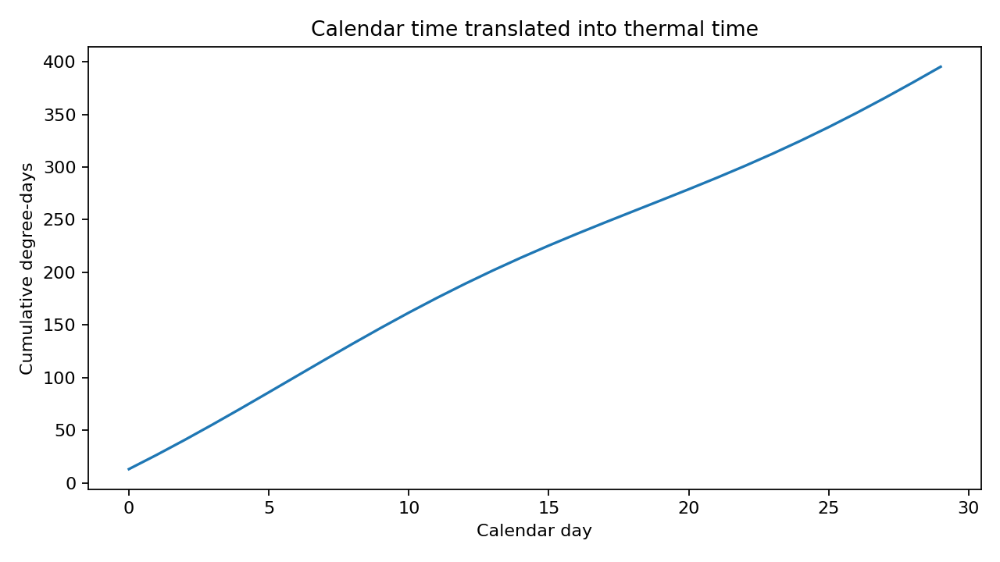

OmniPhenoR Thermal Time: Aligning Plant Development Beyond Calendar Days
Source:vignettes/v25-thermal-time.Rmd
v25-thermal-time.RmdPurpose
Calendar days are often an imperfect developmental clock because plant development responds strongly to temperature. Growing degree-days (GDD) provide a simple thermal-time representation, but the exact calculation convention matters. McMaster and Wilhelm demonstrated that two common interpretations of the same nominal equation can yield materially different accumulations and therefore should be reported explicitly (McMaster and Wilhelm 1997).

1. Teaching weather data
w <- pheno_data("weather_series")
head(w)
#> environment day date tmin tmax tmean rain vpd
#> 1 E1 0 2026-05-01 18.00000 30.00000 24.00000 0.000000 1.200000
#> 2 E1 1 2026-05-02 18.68404 30.68404 24.68404 5.142301 1.405212
#> 3 E1 2 2026-05-03 19.28558 31.28558 25.28558 7.878462 1.585673
#> 4 E1 3 2026-05-04 19.73205 31.73205 25.73205 6.928203 1.719615
#> 5 E1 4 2026-05-05 19.96962 31.96962 25.96962 2.736161 1.790885
#> 6 E1 5 2026-05-06 19.96962 31.96962 25.96962 0.000000 1.790885
#> soil_moisture
#> 1 0.2800000
#> 2 0.3037115
#> 3 0.3153923
#> 4 0.3086410
#> 5 0.2856808
#> 6 0.2700000The synthetic data contain two environments, daily minimum and maximum temperature, mean temperature, rainfall, VPD, and soil moisture.
2. Mean-clamp GDD
tt1 <- pheno_thermal_time(
w,
tmin = "tmin",
tmax = "tmax",
base = 10,
method = "mean_clamp",
by = "environment"
)
head(tt1)
#> environment day date tmin tmax tmean rain vpd
#> 1 E1 0 2026-05-01 18.00000 30.00000 24.00000 0.000000 1.200000
#> 2 E1 1 2026-05-02 18.68404 30.68404 24.68404 5.142301 1.405212
#> 3 E1 2 2026-05-03 19.28558 31.28558 25.28558 7.878462 1.585673
#> 4 E1 3 2026-05-04 19.73205 31.73205 25.73205 6.928203 1.719615
#> 5 E1 4 2026-05-05 19.96962 31.96962 25.96962 2.736161 1.790885
#> 6 E1 5 2026-05-06 19.96962 31.96962 25.96962 0.000000 1.790885
#> soil_moisture gdd thermal_time
#> 1 0.2800000 14.00000 14.00000
#> 2 0.3037115 14.68404 28.68404
#> 3 0.3153923 15.28558 43.96962
#> 4 0.3086410 15.73205 59.70167
#> 5 0.2856808 15.96962 75.67128
#> 6 0.2700000 15.96962 91.64090This computes daily mean temperature, subtracts the base, and clamps negative GDD to zero.
3. Clamp Tmin and Tmax before averaging
tt2 <- pheno_thermal_time(
w,
"tmin",
"tmax",
base = 10,
method = "minmax_clamp",
by = "environment"
)This alternative first clamps the minimum and maximum temperatures to the base before averaging. It is not mathematically identical to the previous convention.
4. Upper threshold
tt3 <- pheno_thermal_time(
w,
"tmin",
"tmax",
base = 10,
upper = 30,
method = "minmax_clamp",
by = "environment"
)An upper threshold can be appropriate for some crop-development applications, but it must be scientifically justified for the crop, stage, and process being modeled.
5. Join thermal time to phenotypes
leaf <- subset(pheno_data("growth_series"), trait == "leaf_area")
leaf_tt <- pheno_weather_join(
leaf,
tt1,
pheno_time = "day",
weather_time = "day",
by = "environment"
)
head(leaf_tt[c("plant_id", "day", "thermal_time", "value")])
#> plant_id day thermal_time value
#> 1 P01 0 14 14.49367
#> 2 P09 0 14 18.59801
#> 3 P04 0 14 19.16524
#> 4 P12 0 14 16.97905
#> 5 P07 0 14 16.36706
#> 6 P02 0 14 15.71294The phenotype can now be modeled against thermal_time
rather than day.
6. Calendar versus thermal growth curves
g_calendar <- pheno_growth(
subset(leaf, plant_id == "P01"), "day", "value", "spline"
)
g_thermal <- pheno_growth(
subset(leaf_tt, plant_id == "P01"), "thermal_time", "value", "spline"
)These fits answer related but different questions. Calendar time describes elapsed experimental time; thermal time describes accumulated temperature exposure under the selected convention.
7. Multiple time origins
s <- pheno_series(leaf, "plant_id", "day", "trait", "value")
s <- pheno_set_time_origin(s, 7, "days_after_treatment")
head(s[c("day", "days_after_treatment")])
#> <pheno_series>
#> rows: 6A complete experimental table can contain calendar date, days after planting, days after treatment, and thermal time simultaneously.
8. Missing temperatures
Do not silently interpolate long periods of missing weather data. The required action depends on whether the gap is one hour, one day, or a long station outage. Record the weather source, aggregation rule, gap-filling method, and whether the same station/sensor was used for all environments.
9. Environmental windows versus thermal time
Thermal time accumulates temperature exposure. Environmental windows summarize recent conditions such as rainfall, VPD, or soil moisture. They answer different questions and should not be substituted for one another.
win <- pheno_environment_window(
w,
time = "day",
variables = c("rain", "vpd", "soil_moisture"),
window = 7,
by = "environment",
functions = c("mean", "sum", "max")
)
head(win)
#> environment day date tmin tmax tmean rain vpd
#> 1 E1 0 2026-05-01 18.00000 30.00000 24.00000 0.000000 1.200000
#> 2 E1 1 2026-05-02 18.68404 30.68404 24.68404 5.142301 1.405212
#> 3 E1 2 2026-05-03 19.28558 31.28558 25.28558 7.878462 1.585673
#> 4 E1 3 2026-05-04 19.73205 31.73205 25.73205 6.928203 1.719615
#> 5 E1 4 2026-05-05 19.96962 31.96962 25.96962 2.736161 1.790885
#> 6 E1 5 2026-05-06 19.96962 31.96962 25.96962 0.000000 1.790885
#> soil_moisture rain_mean_w7 rain_sum_w7 rain_max_w7 vpd_mean_w7 vpd_sum_w7
#> 1 0.2800000 0.000000 0.000000 0.000000 1.200000 1.200000
#> 2 0.3037115 2.571150 5.142301 5.142301 1.302606 2.605212
#> 3 0.3153923 4.340254 13.020763 7.878462 1.396962 4.190885
#> 4 0.3086410 4.987242 19.948966 7.878462 1.477625 5.910500
#> 5 0.2856808 4.537025 22.685127 7.878462 1.540277 7.701385
#> 6 0.2700000 3.780855 22.685127 7.878462 1.582045 9.492269
#> vpd_max_w7 soil_moisture_mean_w7 soil_moisture_sum_w7 soil_moisture_max_w7
#> 1 1.200000 0.2800000 0.2800000 0.2800000
#> 2 1.405212 0.2918558 0.5837115 0.3037115
#> 3 1.585673 0.2997013 0.8991038 0.3153923
#> 4 1.719615 0.3019362 1.2077448 0.3153923
#> 5 1.790885 0.2986851 1.4934256 0.3153923
#> 6 1.790885 0.2939043 1.7634256 0.3153923Reporting checklist
Report base temperature, upper threshold, exact GDD convention, source and temporal resolution of temperature, missing-data handling, accumulation start date/stage, environmental grouping, and whether thermal time was used for alignment, modeling, or merely descriptive visualization.
Final perspective
Thermal time is powerful precisely because it is a defined transformation of weather, not an intrinsic universal clock. OmniPhenoR records the calculation rule so that developmental timing remains reproducible.
Extended worked interpretation
Thermal time can improve comparability when development is temperature driven, but it does not remove all environmental effects. Water deficit, radiation, photoperiod and genotype may change growth even when accumulated degree days are equal. Therefore, a trajectory expressed in GDD should not automatically be described as developmentally normalized.
For multi-environment experiments, calculate cumulative thermal time within each environment or weather station. Pooling temperatures before accumulation would create a clock that belongs to no actual plant. If a treatment itself changes canopy temperature, distinguish air-temperature GDD from organ-temperature measurements rather than mixing the two concepts.
When joining thermal time to phenotype observations, inspect the mapping around missing weather dates. A plausible-looking cumulative curve can hide a long gap if missing daily GDD was replaced by zero. For release examples, small deterministic weather series are preferable because expected cumulative values can be checked exactly.